Bel percorso di collegamento che può costituire un'alternativa più avventurosa di salita al Pisimoni rispetto ai classici sentieri CAI. Il merito è dell'amico Massimo per averne intuito il percorso; inizialmente ero scettico, ma mi è bastato guardare la solita carta al 5000 per rendermi conto non solo che la cosa fosse possibile, ma che anzi il percorso sia assolutamente logico e, come possiamo affermare a posteriori, semplice.
Il ritrovamento di numerosi rami piegati su tutto il percorso, cosa «rasserenante» e che peraltro mi aspettavo, conferma il giudizio.
La neve fresca appena caduta fino a fondovalle suggerirebbe di cambiare i piani, ma si sa, la curiosità dell'esploratore è cosa ardua da fermare.
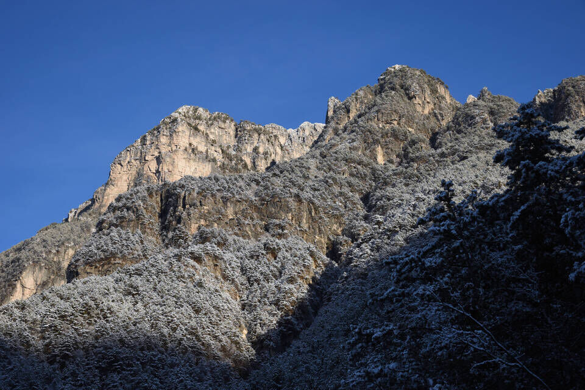Il bellissimo stavolo (o meglio villa...) a q849. Sul cancello c'è scritto "Breci" e quindi lo chiamo stavolo Breci (anche se il sottostante rio Brezi fa venire qualche perplessità toponomastica, senza contare il vicino stavolo Breisi).
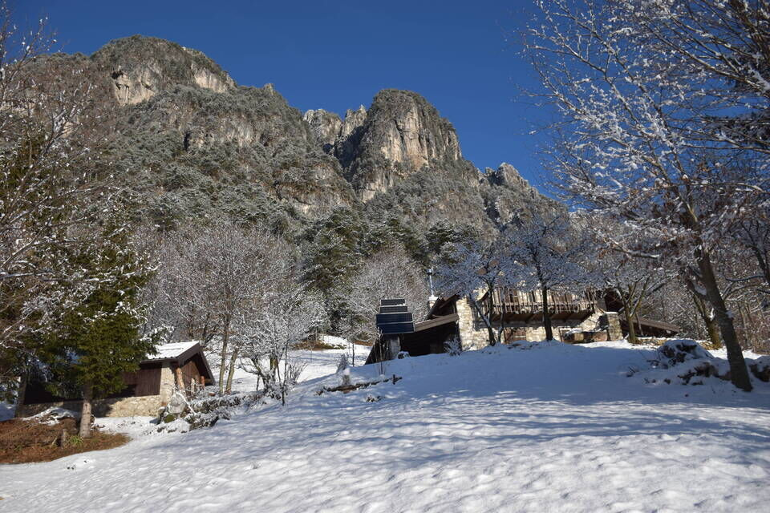 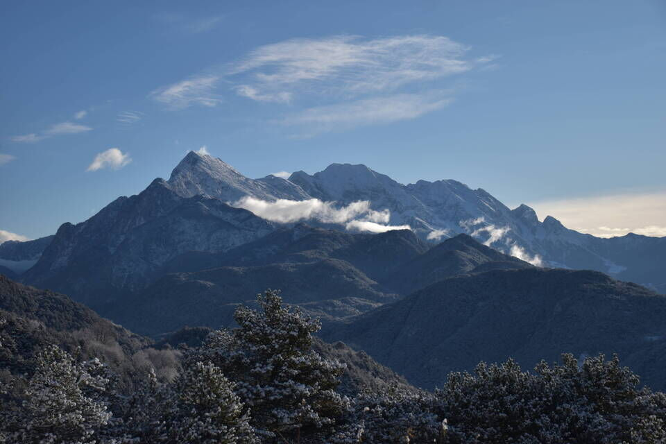Iniziamo a salire il costone sovrastante lungo la traccia che porta alla cengia per forcje Diame, percorsa due anni fa con Kelen (vedi qui). Bisogna salire fino a q1000 circa: il sentiero vira verso sx (prima il terreno a sx era troppo ripido) per poi rientrare verso dx ed imboccare la cengia. Ecco, noi invece abbiamo proseguito verso sx, su una traccia continua di animali. Si arriva presto ad un punto in cui una traccia sale sopra un pulpito ed una scende decisamente: la risposta giusta è la seconda. Si è dunque sul boschetto pensile: traversare in quota fino ad affacciarsi sul pendio a foggia di cengia che permette di accedere al riu dal Mulin.
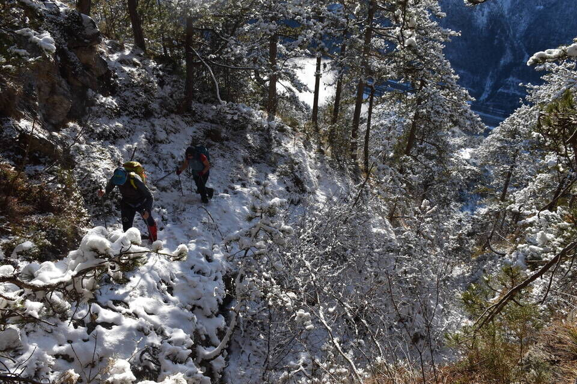La neve rende l'incedere difficoltoso, ma almeno ci permette di vedere chiaramente le impronte dei camosci, che qui ci hanno dato davvero una mano. La traccia per entrare nel rio è veramente ottima.
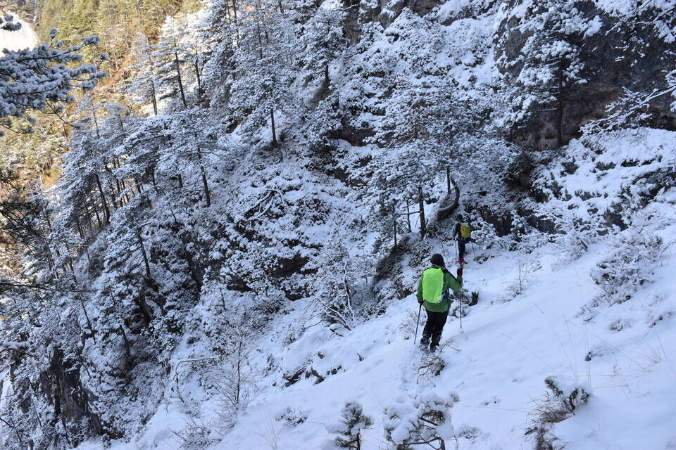Oltre il rio vediamo il grande strapiombo giallo, con sotto la pala di bosco che risaliremo.
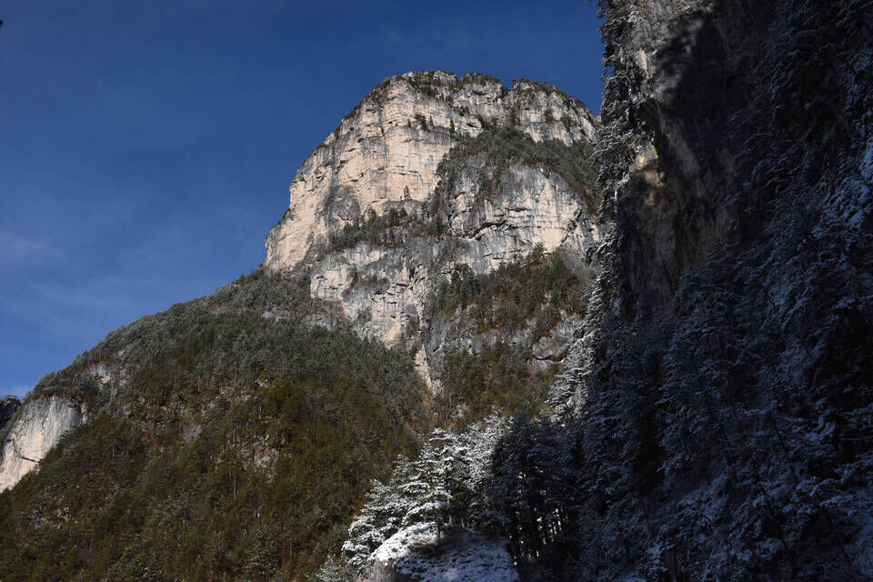Andare in esplorazione riserva sempre sorprese e scorci inaspettati.
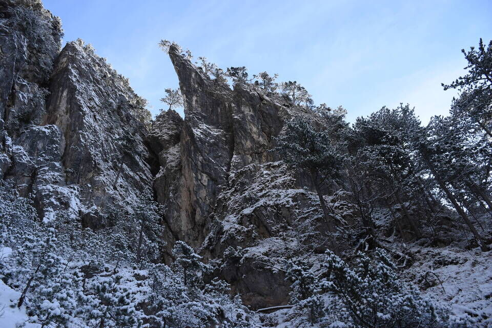 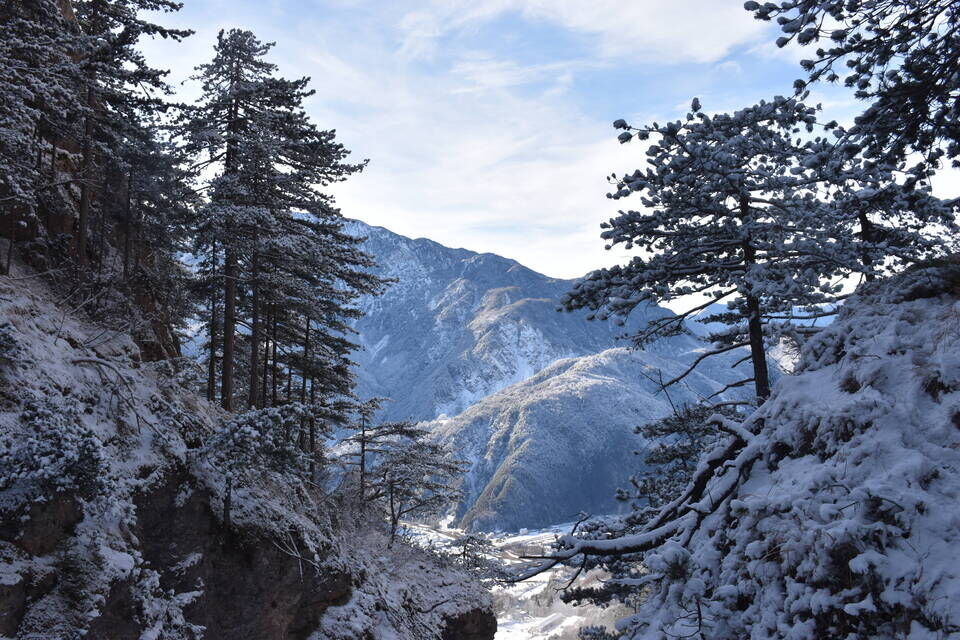L'ingresso nel riu dal Mulin.
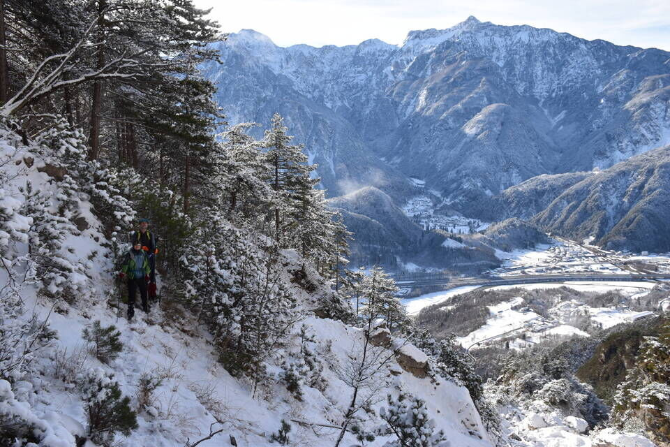Verso Ovedasso, Resiutta e i Povici.
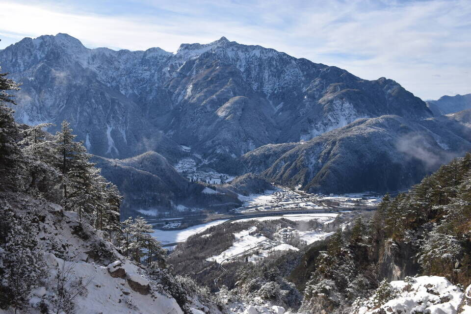Il suggestivo passaggio attraverso il riu dal Mulin.
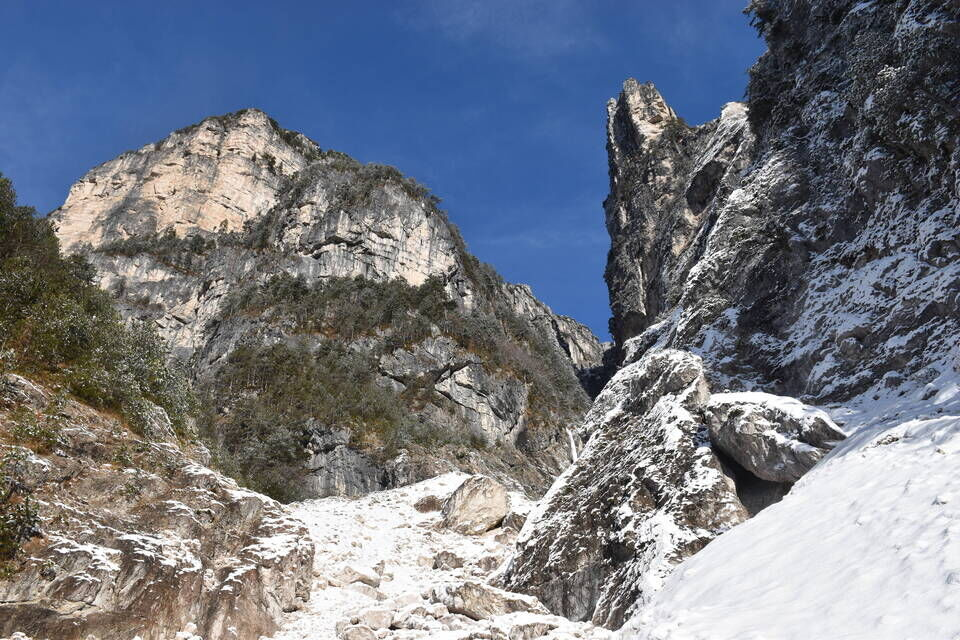Risaliamo la pala di bosco stando prossimi alle pareti e sbuchiamo sotto il grande cret giallo.
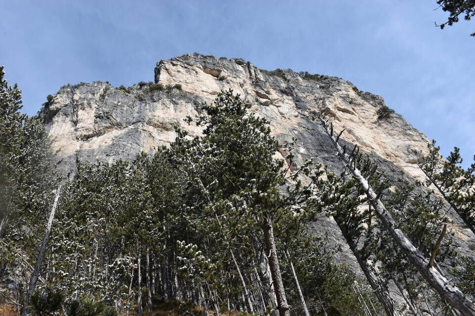Facciamo una deviazione per vedere la cengia perfetta del Pisimoni, ma questa è un'altra storia.

Traversiamo verso ovest fino a congiungerci al sentiero CAI 423 appena prima della «zona delle cenge»: il bellissimo tratto di cengia di detto sentiero oltrepassa la gola in foto poco più in alto.
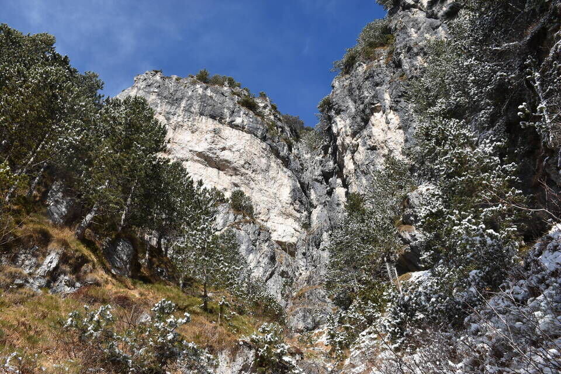Una delle cose che più amo del muoversi in questo tipo di ambienti è l'imbattersi, piuttosto spesso, in bei clapusç sotto parete.
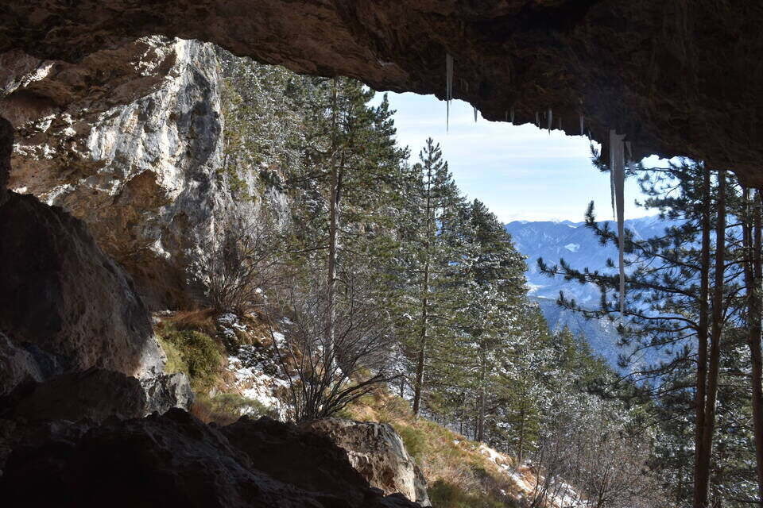Scendiamo al crist di Uèrc e lì decidiamo di percorrere il bel sentiero del Plan Austin che già conoscevo: via quindi per cengia fino al riu di Place, giù al Plan Austin e a Sclàtine, e di nuovo di traverso ad attraversare il rio di Place per congiungerci al CAI 423 presso il crocifisso distante pochi minuti da Ovedasso.
Di fronte l'arcigno versante meridionale del Cuel di Sôre che so essere affrontabile in più modi e su cui vorrei cimentarcimi.
Bella luce sulla Creta Grauzaria.
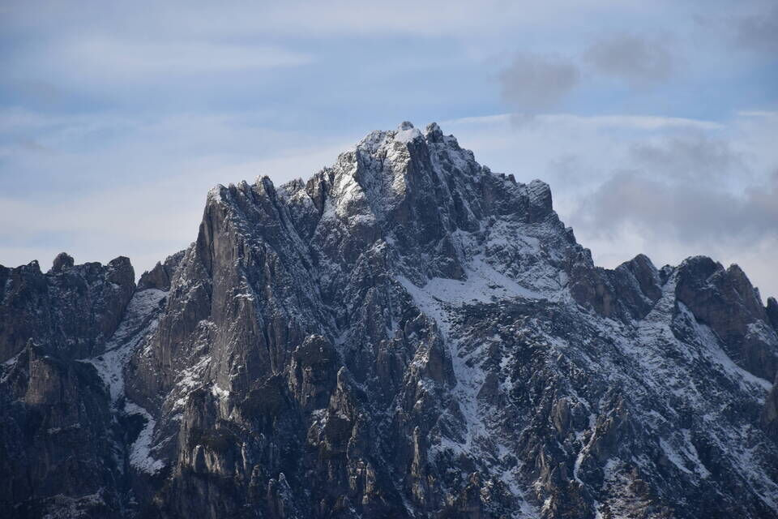Dal fondovalle vediamo il boschetto pensile che abbiamo attraversato (centro foto) e la sorta di cengia che immette nel riu dal Molin, sotto la caratteristica frana del Pisimoni.
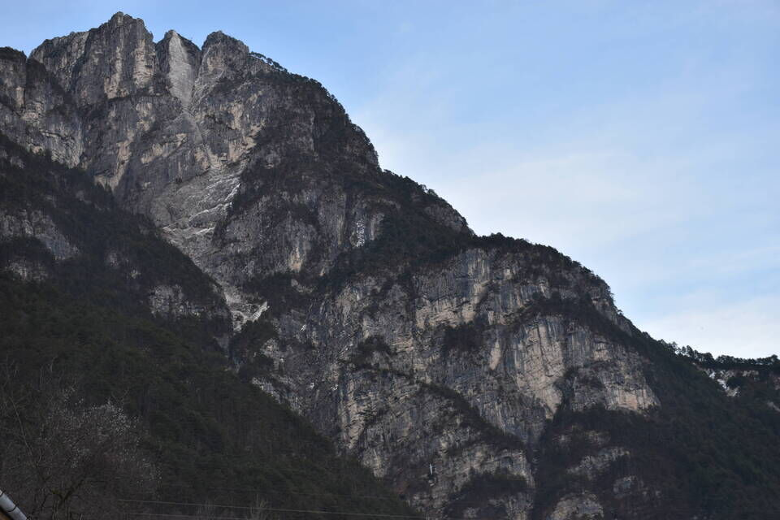